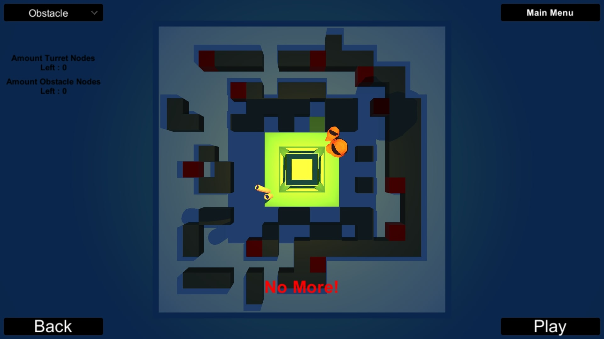
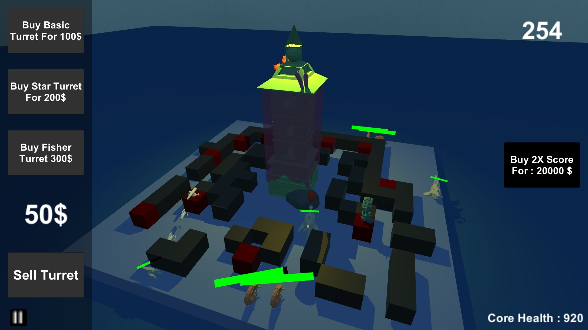
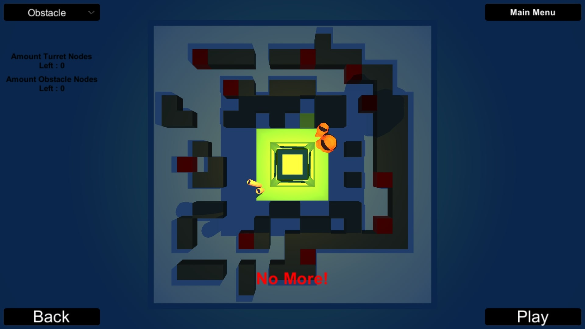
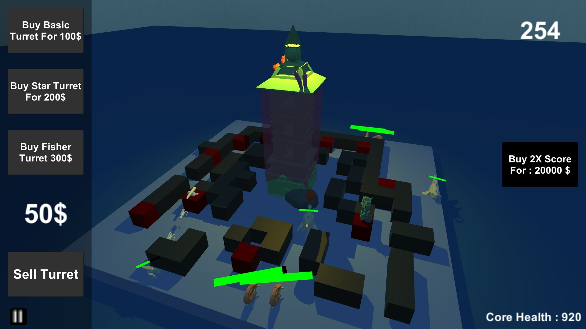

This is a tower defence game. The enemies make use of A* pathfinding algorithm. You can place nodes
where ever you want before the game starts.
The is an option for placing of deleting multiple nodes at once. The goal is to get the highest
score you can achieve via strategically placing
the nodes and turrets.
This game was my first ever game. It was the first project in my first year of school. I had almost
5 months to create a tower defence game.
I spent 3 months just learning the basics of programming and game development, because I had no prior
experience.
After I had an idea of how things work, I started working on the actual project. In the beginning
everything went smoothly and without problems.
But I came across a big problem which was pathfinding. I didn't want to use unity's built-in
pathfinding system because it smoothed the path,
and that wasn't what I was going for. So I started searching for alternatives and came across an
interesting solution which was pathfinding via the
A* algorithm. I quickly began researching and programmed it. That is what I'm most proud of about
this game.
Tower Defence
 



Info
C#
Unity
Duration:~2 months
Status:Complete
Status:Complete